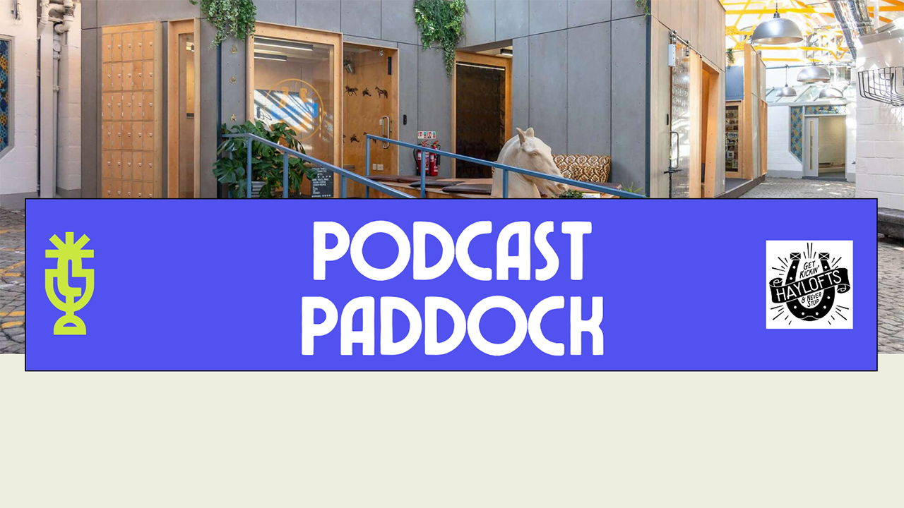

Podcast Paddock - October 2024
Peter Bull
Introduction
Our journey started with Dawn Young, CEO and co-founder of Cluarantonn, who began an interest in listening to true crime podcasts and was listening to stories from many podcasts around the world, but struggled to find stories about cases in Scotland or of Scottish people, as she is Scottish and was interested in hearing about places she knew and cases she was aware of so decided the best way to find this was to start her own podcast, Scottish Murders.
Getting started with the podcast was a challenge, not exactly knowing what to do and what you need but she managed to get the podcast started, and since has got help from many people along the way who helped answer questions that has helped us learned a lot the over the last few years. I got my own start in podcasting thanks to having purchased the kit to record at home and it was just sitting in front of me so decided to start the RoguePlanetoid Podcast which I fit around working full time and will soon have a brand-new studio-based podcast, Talking Inspiration which is currently in development.
We've learned from industry experts along the way that have help us on our podcasting journey, but it can be hard to find that person you could ask questions to and get answers from those who don't know anything about podcasting and beyond, so our aim is to be the bridge to podcasting for as many people and businesses as possible and be the person for them that we would have wanted to speak to but didn't have when we started, to create connections and build a community.
What is a Podcast?
A podcast is something you can listen to whenever or wherever your are, including when you are doing something else like driving to work or travelling on the Metro unlike other media where you have to focus on that activity and then you are competing against other things like watching television or going to the cinema. There are over three million podcasts our there, although only 40% of them are active so there's plenty of room for more voices to get out there and over 12.3 million people in the UK listen weekly to podcasts but there are over 57 million adults in the UK so there are plenty more listeners out there you could reach with a podcast.
Why have a podcast?
You need to think if you need a podcast as it is not for everyone or you do want a podcast but don't have the time but it is possible to make it work, you may be able to give a voice to underrepresented groups and reach new audiences that are underserved, you can humanise your brand as a business and share your story and you can create a sense of engagement and community with your listeners and you can grow your podcast with trusted guests and experts and make connections that you may not otherwise have been able to make and the best thing is that your content will be available for anyone to listen to forever.
How can my podcast stand out?
You need to stand out from the others and production quality is essential as there's so much choice out there, you also need to do something different, and you can engage with authentic and authoritative content with your listeners. You can solve the problems of your listeners by addressing challenges or educate listeners such as with a podcast for a business you can talk about a particular area or niche and that's what people will be looking for and they'll find you and learn more about you, you don't want to just talk about a product or service and you can even ask your audience about specific challenges they face and address them on your podcast. You can also take breaks from your podcast you can release a few episodes then get feedback or tweak things and make any improvements ready for the next set episodes of your podcast.
How do I find time for my podcast?
It can be hard so good time management is a must, so you could do your podcast less often such as one episode per month, which is only twelve episodes per year and you can stay ahead by recording multiple episodes together and depending on what you are talking about you could record all your episodes together and then release them later, the main thing is it is important to be consistent so if you release them once a month or every two weeks then stick to that, listeners who subscribe will expect your episodes to be released on a regular schedule. You can also save time by investing in easy-to-use software, you could also use AI tools to help with your show notes, but it is still important to use your authentic voice but you can always consider working with podcast specialists who could help with editing or even grow and enhance your podcast such as going all out with a studio, you want to be able to do the minimum work necessary to free you up to focus on your business or on other things in your life.
What should I expect from my podcast?
Don't expect overnight success, it is a marathon not a sprint, and you can get long term gratification from your podcast through consistency, but it will take time but done correctly it can be an extension of you and listeners will want to learn from you or look for solutions from you and you can keep them coming back and your podcast can open doors to collaboration and appearing on other podcasts which can further raise your profile and broaden any listeners or even reach more potential customers for a small business.
What's next for my podcast?
That's where Cluarantonn comes in, let us be your bridge to podcasting, we want to help people get started with their journey into podcasting or help those who've already started a podcast to make the connections or get the support they need to help make the most of their podcast and as mentioned before we want to be the person we would have wanted to speak to when we started podcasting. You can find out more about how Cluarantonn can help new or existing podcasters or to connect with small businesses or freelancers to get help with podcasting and build a community at cluarantonn.com.
Dan Brough
Dan is a conceptual writer and creative advertising copywriter with mam's the word and has worked on writing show notes for podcasts. Dan does creative copywriting and has worked in Edinburgh and Glasgow and in the middle of the pandemic started their own consultancy and has worked with many brands including Metro, Bet 365 and Subway. They tell stories every day and you must be 100% slick as Mr Google doesn't like spelling mistakes. They help with storytelling and tone of voice and specialise in things such as podcast show note and bios and offers a great alternative to AI where you end up sounding like everyone else, so, if you need help with your words then she's your lass at mamstheword.co.uk.
Paul Lancaster
Paul is founder of PLATFORM, UK Startup Week, is a Business Growth Consultant and podcaster with the SuperConnector Show. Paul has experience working with big corporates and even recruiting where he placed people into roles, including rather uniquely placing me in two different jobs concurrently, and his business is all about connecting people. He started his own podcast the SuperConnector show a few years ago to get across what it is like in North East to start your own business and to give a voice for people in the region. At his Startup Week event a few years ago, he even helped Steven Bartlett connect with someone who he did a podcast with recently and He has started listening to his podcasts again and it is good to document where he has come from and where he is going which includes UK Startup Week next year which you can sign up at ukstartupweek.com.
Qasim Asghar
Qasim is founder of Qudos as a tech recruiter, meetup organiser of .NET Meetup Newcastle and podcaster with Talks with Tech Leaders. Qasim wanted to start his own podcast, but he didn't just want it to just be on a Zoom call, he happened to be working in Flok who have a studio and as part of the rent he can use the studio to record his podcast. He now has two podcasts Talks with Tech Leaders and Talks with TA Leaders. His aim was to generate more business opportunities but didn't realise how much they would learn from doing the podcast that has helped him in his business. When doing podcast people's guards are down and before only had top level knowledge and can help candidates. He has overcome some technical issues including having an episode that had a problem with the camera so was audio only or when recording remotely the other person closed their browser too quickly and lost the last twenty minutes of video. When they talk to someone, they have been thinking about generating new business it also helps gives them more experience. They do their own editing as had a broadcast journalism degree and use Descript to edit their podcast and can also use AI to generate content but give it a once over. They use a lot of free software and tools like Chop.ai to generate shorts with music to create content. Think why you should do start a podcast, but people love to speak about themselves, and they can talk about anything. Learn from your mistakes and it is not the end of the world. It can take over so need to have manage your workload. You can learn more about Qudos and the .NET Meetups I've been proud to have both attended and presented at getqudos.com.
Nic Redman
Nic is a spoken voice coach and voice director offering coaching, courses, workshops and podcaster with The Voice Coach Podcast. Nic asked if people want to crawl into a dark hole when they hear their voice and asked if people want to enjoy experience of hearing your own voice back. Nic then asked those at the event to close their eyes and stand with their legs wide, like they have a paint brush up their bum and do some vocal exercises, sounding like a disgruntled horse on to feel a bit looser. Nic is the host of The Voice Coach Podcast and have a three-stage process to help podcasters to help them, so they aren't worrying about your voice and instead on what impact you are having. They help people write how they want to speak and help structure and how you want to deliver it and help improve vocals and delivery including live direction and can help with intros and outros and help copy and voice and that you can listen to and not feel about crawling into that black hole. They are on a mission to help podcasters with their vocal warm up for podcasters which is a seven-minute audio or video warm up for journey to help podcasters, the main thing is don't worry about how you sound. You can find more about how Nic can help at nicolaredman.com.
Alison Dunn
Alison is CEO of Citizens Advice Gateshead, Executive Director of Society Matters, Chair of the Board of Trustees for VONNE and podcaster with This is The North. Alison talked about their podcast where it is highlighting the challenges and to change futures of those in the North East of England, she has talked to Fatima Whitbread and Ann Cleeves about important topics and the lack of opportunities between North and South. They started podcast as wanted to influence all the people in this space, they don't know if those people are listening, but their podcast is a regional podcast about regional views, and it isn't driven by numbers but is instead about their passion and they aren't looking at analytics but instead have got a lot of value from the podcast. They have been invited to tender for work and has helped their charity thrive. Their episodes take ten hours of preparation and their first episode they had many questions but what works is understanding the experience of their guests but absolutely need to understand the subject matter and need to do enough preparation which takes time, but it is important. You can find out more about Citizens Advice Gateshead at citizensadvicegateshead.org.uk
Christelle Gatchalian
Christelle is a brand development design and strategy specialist with The End of Nowhere to help bring an end to your identity crisis! Christelle talked about what do people think when they think of you, your branding is more than a logo it is an emotional response and branding fits into things as people take seconds to form a first impression. Are you boring or smart, would you use same words to describe how you present yourself and is this actually true. Is your brand translating correctly, your identity is entirely in your hands and what makes a good brand identity with a feeling where audience wants to come back. The way you address your audience and set yourself apart from competitors and social media, how audience interacts. Cluarantonn originally wanted corporate blues and whites and ode to Scotland but was more NHS and that is not who Cluarantonn are, Cluarantonn are fun and passionate, and the branding should reflect this and be a bridge to the podcasting world - a slogan she came up with, and the business is reflected in the branding including story and identity and the meaning is all visually translated into the logo. Branding can be intimidating journey but there is no feeling of going nowhere. It is a goal where you just want to know about how to position your brand which you can find at theendofnowhere.co.uk
Terry McStea
Terry is Head of Design Network North with RTC North and podcaster with Northern Spotlights. Terry is with RTC North who have done loads of stuff but isn't well known so a year ago they decided to start a podcast and were told it would be a good idea to be the host. Northern Spotlights was their podcast and is amazing how quick your feelings change when it is your podcast. They didn't just want a desk with two mics so built a set from chairs and plants from their house for a more homely feeling. They have interviewed people to talk about their whole life and ask to get photo from early life, early career and a highlight of their career. People enjoy being asked about themselves and some people haven't really thought about it. They talk to someone for an hour and a half, so they have a break halfway and have a tea and biscuit and now they ask about what biscuit their favourite biscuit was, with one guest being vegan so needed biscuits that were vegan. They do an episode once per month but need that momentum and need to keep telling people about it. They keep the conversations going and even did a trailer for podcast recently when on holiday. The main thing is to make it fun, just ask someone, you never know, they have fun and have a laugh and have a really good couple of hours when recording and you might even enjoy it too! You can find out more about RTC North at rtcnorth.co.uk.